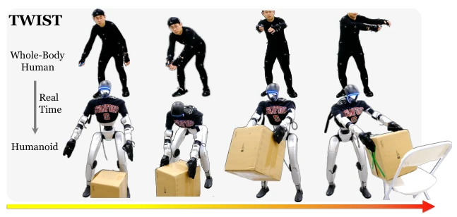
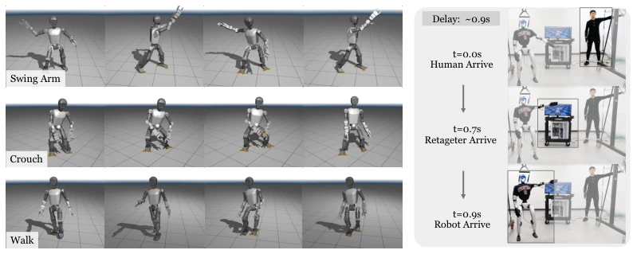
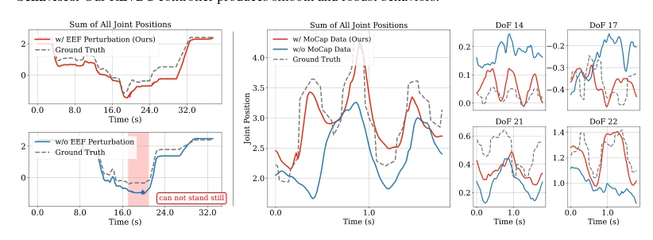
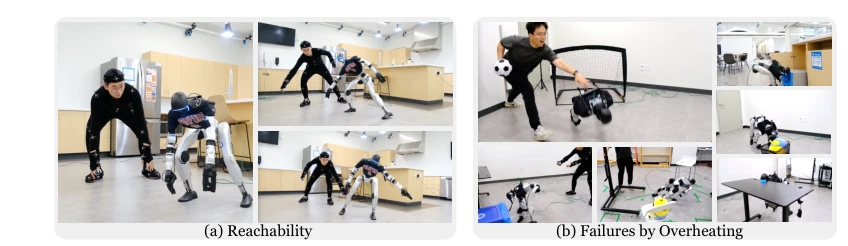

Figure 3: The Teleoperated Whole-Body Imitation System (TWIST) consists of 3 stages: 1) curating a humanoid motion dataset by retargeting Internet human data and our MoCap data, 2) training a single whole- body controller in simulation, 3) teleoperating real-world humanoid robots with MoCap devices.
Figure 6: (left) Tracking errors of different controllers, measured on our MoCap test data. (right) Controller behaviors. Our RL+BC controller produces smooth and robust behaviors.
其他图片Other Figures

Figure 1: The Teleoperated Whole-Body Imitation System (TWIST) is a system that teleoperates humanoid robots with real-time whole-body human data and a single neural network controller. TWIST achieves versatile, coordinated, whole-body skills that are not present in previous works.

Figure 4: Booster T1 sim2sim results. The whole-body controller is trained in IsaacGym [40] and evaluated in MuJoCo [45]. The tracking goals are sampled from training data.

Figure 7: (left) Rollout curves in the real world when the robot holds a box. (right) Rollout curves in MuJuCo from different controllers when tracking MoCap data.

Figure 9: (a) Extreme reachability by TWIST. (b) Failures caused by motor overheating.